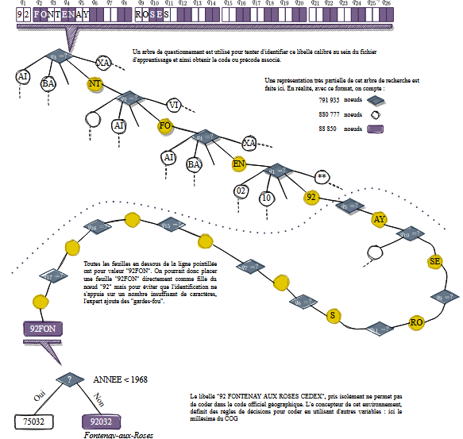
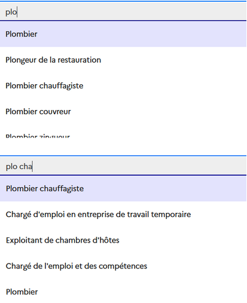
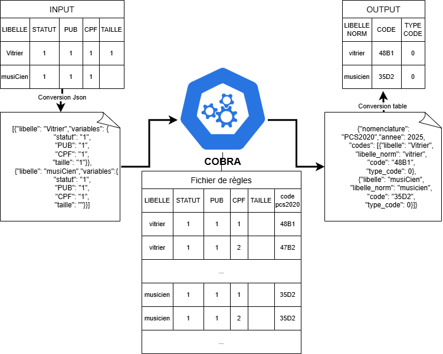
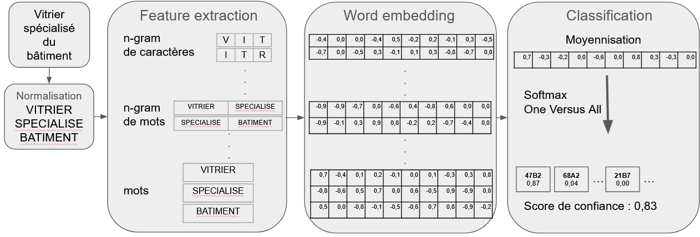
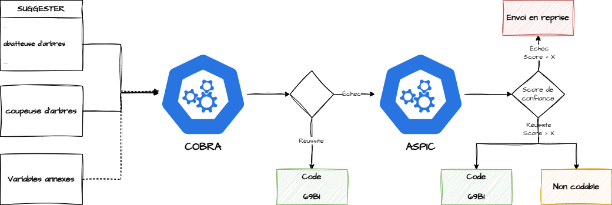
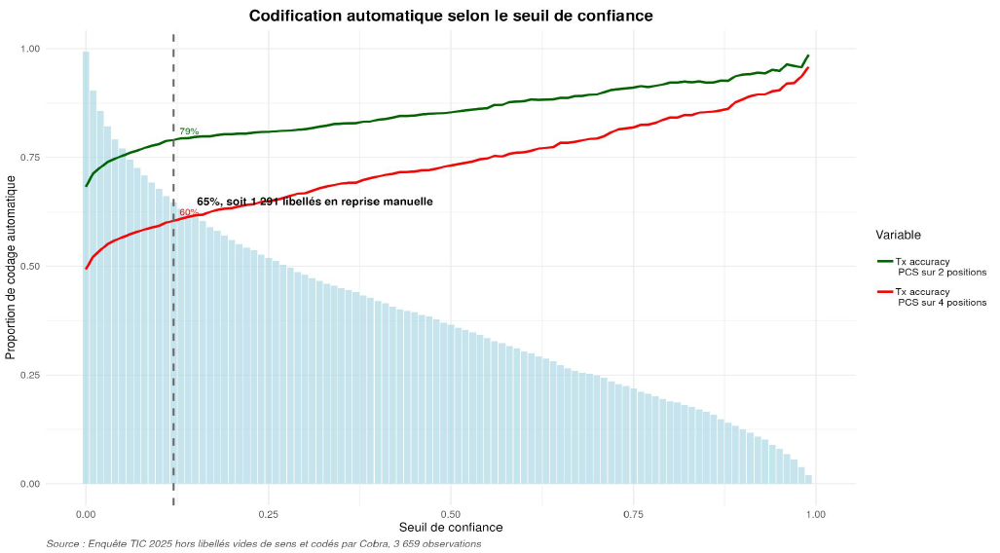
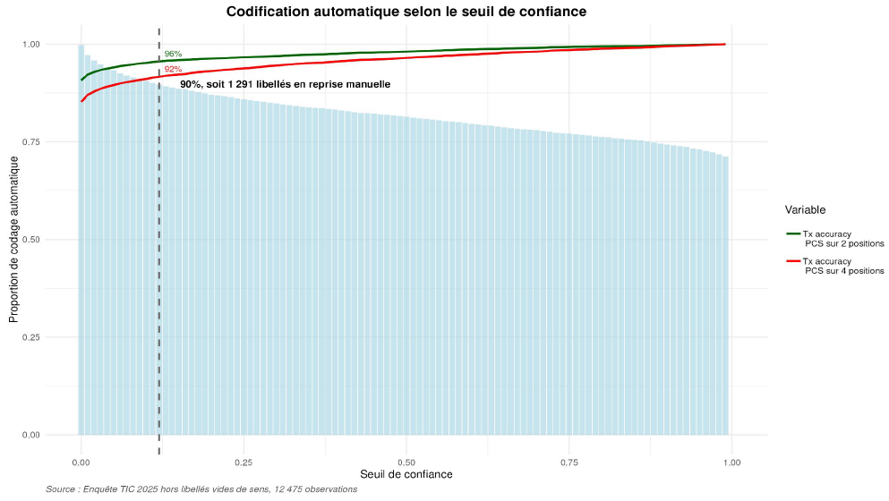

Mise en place d’un nouveau service de codification à l’Insee
Journée Grandes Enquêtes - Mars 2026
25/04/2026
Sommaire
1 Contexte de la mise en place du nouveau service de codification
”
1.1 Sicore depuis 1993
Depuis plus de 30 ans, Sicore assure la codification dans les différentes nomenclatures à l’Insee
Sicore : Système Informatique de Codage de Réponse aux Enquêtes
Système expert construit autour de 3 moteurs de règles :
- règles de normalisation (caractères blancs, vides, synonymes, calibrage)
- règles d’identification du libellé dans un index
- règles logiques avec variables annexes
1.2 Titre transparent

1.3 Sicore
- Mais plusieurs limites à son usage sont apparues :
- logiciel devenu difficilement maintenable ;
- pas de possibilité de maîtriser le volume de libellés envoyés en reprise manuelle ;
- maintenance lourde des fichiers de connaissance pour certaines nomenclatures.
- Début 2022, travaux pour mettre en place un nouveau système de codification
2 Les outils
2.1 Le suggester
- Outil d’autocomplétion
- Composant javascript embarqué dans les questionnaires des enquêtes ménages et dans le recensement
- nécessite des listes de libellés construites par des experts
- Outil paramétrable :
- affichage échos à partir de 3 caractères saisies
- liste de synonymes
- stopwords
2.2 Titre transparent

2.3 Cobra
- Codification basée sur des règles automatisés
- Service web développé en langage Python
- Codification déterministe en deux étapes :
- Normalisation
- Conversion du libellé normalisé (et des variables additionnelles) en un code par l’intermédiaire d’un fichier de règles
- permet :
- En première intention, codage des libellés saisis sur liste
- En deuxième intention, codage des libellés saisis en clair
2.4 Titre transparent
- Nomenclatures disponibles:
- NAF (2 positions) / PCS 2020 / ISCO-08
- Niveaux / Diplômes
- PCS 2020 pour les Déclarations Sociales Nominatives (DSN)
- Communes / Pays / Nationalités / Langues
- Possibilité d’appeler plusieurs millésimes
- Bac-à-sable disponible pour les experts des nomenclatures
2.5 Titre transparent
- Normalisation
- Mapping
- Renvoi de la 1ère correspondance
- Renvoi du type de code complet
- partiel
- incohérent
- inconnu

2.6 Aspic
- Application de sélection probabiliste pour l’identification d’un code
- Service web développé en langage Python
- Codification probabiliste basée sur des outils de traitement du langage naturel et de machine learning en trois étapes :
- Normalisation du libellé
- Word embedding
- Classifieur
- renvoie :
- la meilleure prédiction et le score de confiance associé
- les 5 meilleures prédictions et leur probabilité associée
2.7 Titre transparent
- Nomenclatures disponibles :
- NAF 2008 (2 positions)
- PCS 2020 (3 modèles selon si l’enquêté est “salarié”, “indépendant” ou “autre”)
- Bibliothèque utilisée en production : fastText (Meta)
- Avantages :
- Word embedding + Classifieur
- Rapide et coût informatique léger (CPU)
- Fonctionne sur CPU
- Inconvénients :
- Contournement pour prendre en compte les variables annexes
- Modèle difficilement interprétable
- Archivage par Méta en mars 2024
- Avantages :
2.8 Titre transparent

2.9 Aspic - Ecosystème

3 Le fonctionnement du service
3.1 Circuit de codification

3.2 Démonstration
Seulement pour aujourd’hui -> https://codificationpcs.lab.sspcloud.fr/
4 Quelques résultats
4.1 Enquête TIC
Enquête sur l’usage des Technologies de l’Information et de la Communication auprès des ménages :
- Objectif : collecter des informations décrivant l’équipement des ménages et leurs usages dans le domaine des nouvelles technologies
- Taux de recours à la liste des libellés en 2025 : 61 %
| Recours à la liste | Codification 4 positions |
Codification < 4 positions |
Échec de la codification |
|---|---|---|---|
| Non (39 %) | 27 % | 2 % | 71 % |
| Oui (61 %) | 99 % | 1 % | 0 % |
Source : Enquête TIC 2025, hors libellés vides de sens
4.2 Codification par Aspic

4.3 Codification par Cobra et Aspic

5 Perspectives
5.1 Les perspectives
- Amélioration de la normalisation par Cobra
- Déploiement de nouveaux modèles avec Aspic :
- Diplômes / Niveaux
- communes de naissance
- Utilisation de modèles plus performants :
- TorchTextClassifiers (Insee - SSPLab)
- Modèle PyTorch
- gestion des variables catégorielles
- choix de l’algorithme de tokenization
- explicabilité
- open source : lien vers github
- BERT
- TorchTextClassifiers (Insee - SSPLab)
- Arbitrage entre performance / ressources
- Ouverture partielle du service sur Kube DMZ pour le SSP (Authentification par jeton)
- Yves Coltier
- Responsable de la méthodologie
du codage automatique - Division Recueil et traitement
de l’information - 01 87 69 55 53
- yves.coltier@insee.fr